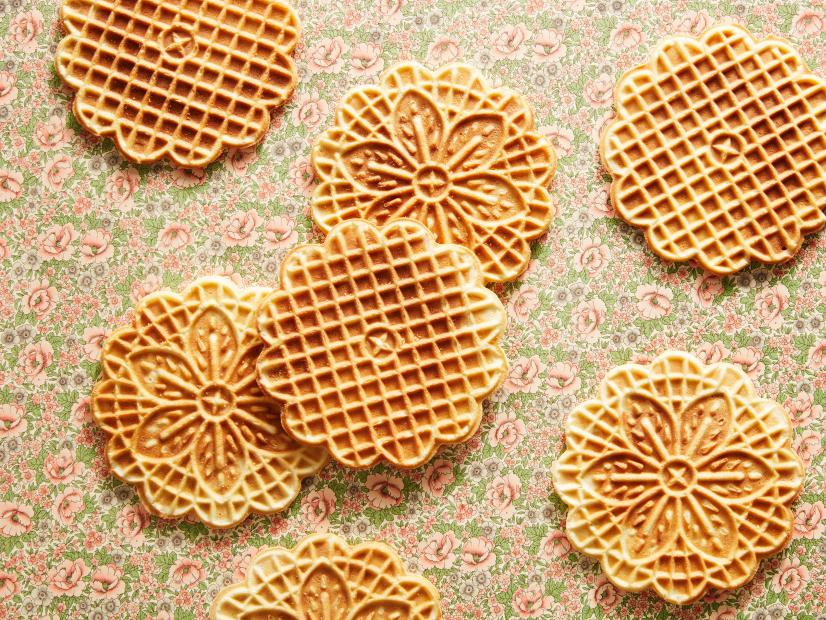

Pizzelles

Description
A crisp, flat, waffle-like cookie made in a special hot iron. Food Network calls it the oldest cookie recipe on
earth, dating back to the 8th century BC. Nowadays you can buy an electic pizzelle iron.
Ingredients
- 3/4 cup sugar
- 1/2 cup butter, melted
- 2 tablespoons milk
- 1 teaspoon vanilla extract
- 1/2 teaspoon anise extract, optional
- 3 large eggs 🥚 🥚 🥚
- 1 2/3 cups all-purpose flour
- 1 1/2 teaspoons baking powder
- 1/4 teaspoon kosher salt
Steps
- Whisk together the sugar, butter, milk, vanilla, anise extract if using and eggs in a large bowl. Add the
flour, baking powder and salt, and continue to whisk until the batter is smooth. Allow to stand at room
temperature for at least 1 hour so the batter can hydrate.
- Heat the pizzelle iron, and cook your pizzelles according to the manufacturer's directions.